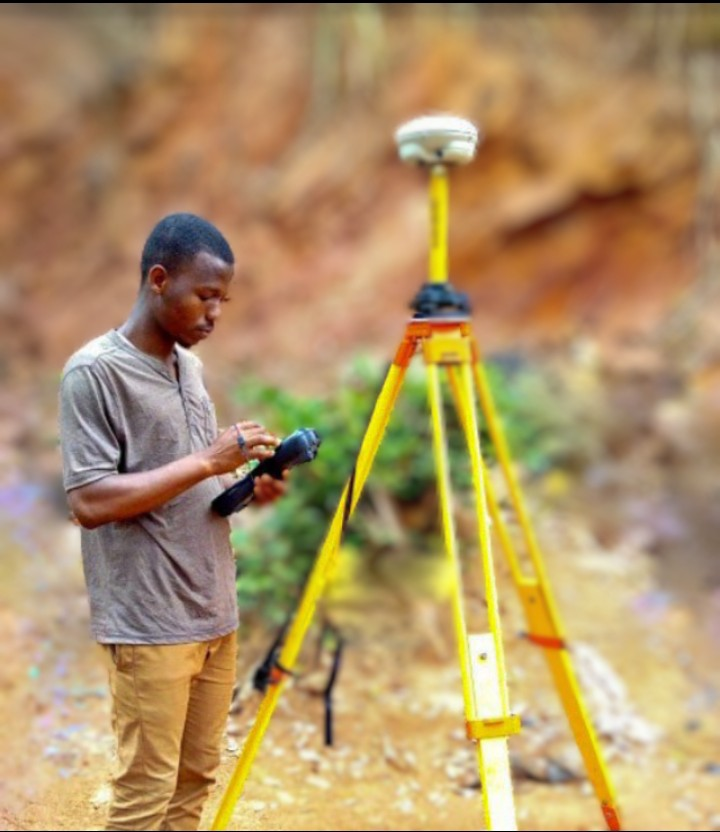

About Us
BeaconSurvey
This page is designed to aid the land surveyors and geomatic engineers to independently
geolocate GNSS CORS installed across the country and some survey Ground Control Pillars(GCPs) within the Savannah Region of Ghana in particular.
It provides details such as the coordinates of these CORS and GCPs and their locatitons on digital google maps
with which reconnaissance, cadastral & engineering surveys and mapping could be remotely planned and also executed on the fied.